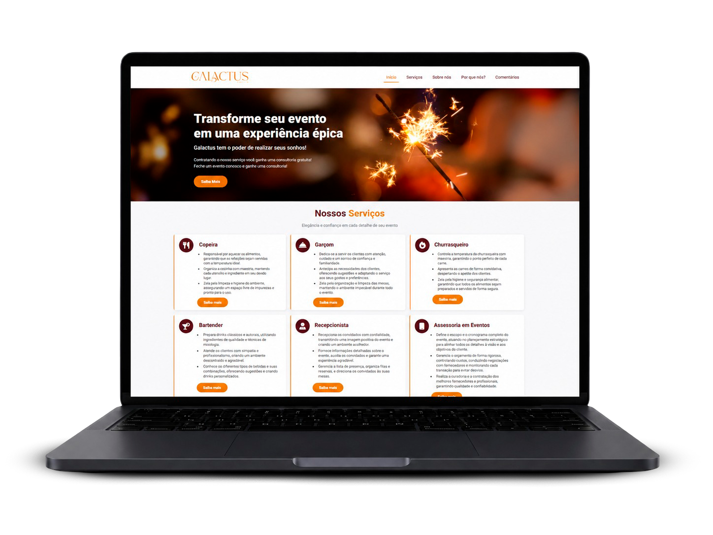

✦
Tenho uma ideia, mas não sei por onde começar
Organizamos a ideia, validamos prioridades e desenhamos um primeiro produto que caiba no seu momento.
Quero estruturar minha ideia →Engenharia de software com conversa clara
Eu transformo problemas, planilhas e processos lentos em software sob medida. Você traz o contexto; eu ajudo a descobrir o melhor caminho, sem exigir que você saiba qual tecnologia usar.

Comece pelo seu momento
Identifique onde sua empresa está agora. A tecnologia vem depois, escolhida para servir ao seu objetivo.
Organizamos a ideia, validamos prioridades e desenhamos um primeiro produto que caiba no seu momento.
Quero estruturar minha ideia →Transformamos tarefas repetitivas, planilhas e retrabalho em um sistema simples, seguro e eficiente.
Quero ganhar eficiência →Investigamos lentidão, falhas e dívida técnica para refatorar, integrar ou escalar com segurança.
Quero avaliar meu sistema →Soluções que acompanham seu negócio
Não entrego apenas código. Entrego uma solução compreensível, testada e preparada para a rotina real da sua empresa.
Conversar sobre o meu desafioPainéis, portais, plataformas e ferramentas internas desenhadas para sua operação.
Conhecer este serviço →Experiências rápidas e orientadas à conversão, da presença digital à venda online.
Conhecer este serviço →Decisões técnicas claras para começar certo, integrar sistemas ou destravar um projeto.
Conhecer este serviço →Modernização de sistemas legados, performance, segurança e evolução contínua.
Conhecer este serviço →Um processo sem caixa-preta
Uma jornada objetiva, com diálogo frequente e entregas que podem ser vistas e validadas.
Conversamos por videoconferência sobre suas necessidades, sua rotina e o resultado esperado.
Você recebe escopo, etapas, prazo e investimento sem surpresas.
Desenvolvo, testo e mostro a evolução em ciclos curtos.
Validamos, documentamos e combinamos suporte para os próximos passos.
Código que vira solução.
Quem vai construir com você
Sou Gabriel Yorramn, analista e desenvolvedor de sistemas, desenvolvedor Full Stack e líder técnico. Gosto de aprender, ensinar e resolver problemas de forma direta, transformando necessidades reais em produtos escaláveis.
Minha prioridade não é empurrar uma ferramenta da moda. É entender o que sua empresa realmente precisa e escolher uma arquitetura coerente com seu tempo, orçamento e objetivo.
Experiências reais
Landing page e ponte de captação
"Excelente desenvolvimento, entrega rápida e agilidade na resposta."
Experiência web mobile para novos leads
"Trouxe resultados quase imediatamente!"
A base técnica
Para quem quer conhecer os bastidores: um ecossistema moderno para construir, integrar e sustentar soluções de diferentes complexidades.
PHP & Laravel / Node.js / APIs REST / Microsserviços
Angular / React / TypeScript / JavaScript / HTML & CSS
MySQL / PostgreSQL / Redis / Docker / Git / Linux
WordPress / WooCommerce / Delivery customizado
Pronto para o próximo passo?